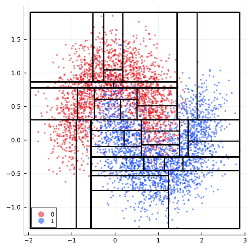
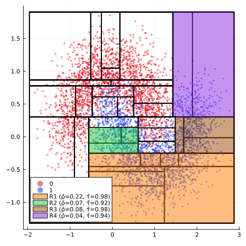
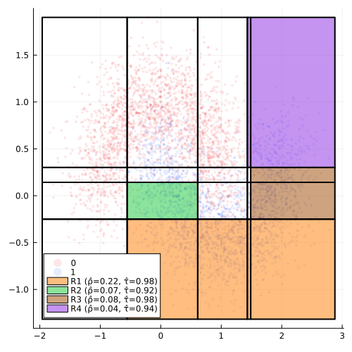
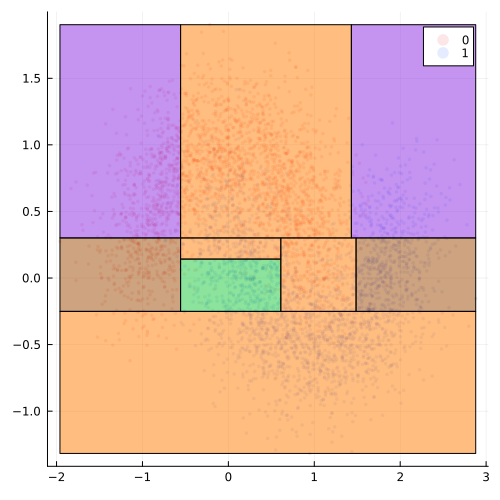
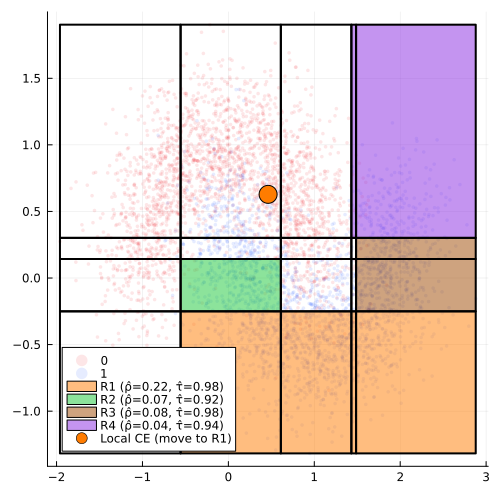

T-CREx Generator
The T-CREx is a novel model-agnostic counterfactual generator that can be used to generate local and global Counterfactual Rule Explanations (CREx) (Bewley et al. 2024).
Work on this feature is still in its very early stages and breaking changes should be expected. The introduction of this new generator introduces new concepts such as global counterfactual explanations that are not explained anywhere else in this documentation. If you want to use this generator, please make sure you are familiar with the related literature.
Usage
The implementation of the TCRExGenerator depends on DecisionTree.jl. For the time being, we have decided to not add a strong dependency on DecisionTree.jl to the package. Instead, the functionality of the TCRExGenerator is made available through the DecisionTreeExt extension, which will be loaded conditionally on loading the DecisionTree.jl (see Julia docs for more details extensions):
using DecisionTreeLet us first load set up the problem by loading some data. To reproduce the example in Bewley et al. (2024) as accurately as possible, we use Python’s scikit-learn to load the synthetic data:
using CondaPkg; CondaPkg.add("scikit-learn");
using PythonCall;
skd = pyimport("sklearn.datasets");
n = 5000
X, y = skd.make_moons(n_samples=n, noise=0.3, random_state=0)
X = pyconvert(Matrix, X) |> permutedims |> x -> Float32.(x)
y = pyconvert(Vector, y)
# Setting up color palette as in paper:
col_pal = palette(:seaborn_bright)[[4,1,2,3,6,5,7,8,9]];Next, we wrap the data in a CounterfactuaData container, fit a simple classification model to the data and store the model prediction for the entire training dataset (we need those to train the tree-based surrogate model).
# Counteractual data and model:
data = CounterfactualData(X, y)
flux_training_params.batchsize = 100
M = fit_model(data, :MLP)Finally, we determine a target and factual class and choose a random sample from the factual class:
target = 1
factual = 0
chosen = rand(findall(predict_label(M, data) .== factual))
x = select_factual(data, chosen) Next, we instantiate the generator much like any other counterfactual generator in our package:
ρ = 0.02 # feasibility threshold (see Bewley et al. (2024))
τ = 0.9 # accuracy threshold (see Bewley et al. (2024))
generator = Generators.TCRExGenerator(ρ=ρ, τ=τ)Finally, we can use the TCRExGenerator instance to generate a (global) counterfactual rule epxlanation (CRE) for the given target, data and model as follows:
cre = generator(target, data, M) # counterfactual rule explanation (global)The CRE can be applied to our factual x to derive a (local) counterfactual point explanation (CPE):
idx, optimal_rule = cre(x) # counterfactual point explanation (local)Worked Example from Bewley et al. (2024)
To make better sense of this, we will now go through the worked example presented in Bewley et al. (2024). For this purpose, we need to make the functions of the DecisionTreeExt extension available.
Please note that of the DecisionTreeExt extension is loaded here purely for demonstrative purposes. You should not load the extension like this in your own work.
DTExt = Base.get_extension(CounterfactualExplanations, :DecisionTreeExt)(a) Tree-based surrogate model
In the first step, we train a tree-based surrogate model based on the data and the black-box model M. Specifically, the surrogate model is trained on pairs of observed input data and the labels predicted by the black-box model: $\{(x, M(x))\}_{1\leq i \leq n}$.
As in the paper, we assume here that the black-box model is an oracle with perfect accuracy. This is done purely to stay as close as possible to the example in the paper.
Following Bewley et al. (2024), we impose a minimum number of samples per leaf to ensure counterfactual feasibility (also often referred to as plausibility). This number is computed under the hood and based on the generator.ρ field of the TCRExGenerator, which can be used to specify the minimum fraction of all samples that is contained by any given rule.
# Surrogate:
Xtrain = permutedims(X)
ytrain = categorical(y)
fx = ytrain # assume perfect accuracy
model, fitresult = DTExt.grow_surrogate(generator, Xtrain, fx)
M_sur = CounterfactualExplanations.DecisionTreeModel(model; fitresult=fitresult)We can reassure ourselves that the feasibility constraint is indeed respected:
# Extract rules:
R = DTExt.extract_rules(fitresult[1])
# Compute feasibility and accuracy:
feas = DTExt.rule_feasibility.(R, (X,))
@assert minimum(feas) >= ρ
@info "Minimum fraction of samples across all rules is $(round(minimum(feas), digits=3))"
acc_factual = DTExt.rule_accuracy.(R, (X,), (fx,), (factual,))
acc_target = DTExt.rule_accuracy.(R, (X,), (fx,), (target,))
@assert all(acc_target .+ acc_factual .== 1.0)plt = plot(data; ms=2, markerstrokewidth=0, size=(500, 500), palette=col_pal, alpha=0.5)
rectangle(w, h, x, y) = Shape(x .+ [0,w,w,0], y .+ [0,0,h,h])
function plot_grid!(p, grid)
for (i, (bounds_x, bounds_y)) in enumerate(grid)
lbx, ubx = bounds_x
lby, uby = bounds_y
lbx = maximum([lbx, minimum(X[1, :])])
lby = maximum([lby, minimum(X[2, :])])
ubx = minimum([ubx, maximum(X[1, :])])
uby = minimum([uby, maximum(X[2, :])])
plot!(
p,
rectangle(ubx - lbx, uby - lby, lbx, lby);
fillcolor="black",
fillalpha=0.0,
label=nothing,
lw=2, palette=col_pal
)
end
end
plot_grid!(plt, R)
plt
(b) Maximal-valid rules
From the complete set of rules derived from the surrogate tree, we can derive the maximal-valid rules next. Intuitively, “a maximal-valid rule is one that cannot be made any larger without violating the validity conditions”, where validity is defined in terms of both feasibility (generator.ρ) and accuracy (generator.τ).
R_max = DTExt.max_valid(R, X, fx, target, τ)
feas_max = DTExt.rule_feasibility.(R_max, (X,))
acc_max = DTExt.rule_accuracy.(R_max, (X,), (fx,), (target,))
p1 = deepcopy(plt)
function plot_surr!(plt)
for (i, rule) in enumerate(R_max)
ubx, uby = minimum([rule[1][2], maximum(X[1, :])]),
minimum([rule[2][2], maximum(X[2, :])])
lbx, lby = maximum([rule[1][1], minimum(X[1, :])]),
maximum([rule[2][1], minimum(X[2, :])])
_feas = round(feas_max[i]; digits=2)
_n = Int(round(feas_max[i] * n; digits=2))
_acc = round(acc_max[i]; digits=2)
@info "Rectangle R$i with feasibility $(_feas) (n≈$(_n)) and accuracy $(_acc)"
lab = "R$i (ρ̂=$(_feas), τ̂=$(_acc))"
plot!(plt, rectangle(ubx-lbx,uby-lby,lbx,lby), opacity=.5, color=i+2, label=lab, palette=col_pal)
end
end
plot_surr!(p1)
p1
(c) Induced grid partition
Based on the set of maximal-valid rules, we compute and plot the induced grid partition below.
_grid = DTExt.induced_grid(R_max)
plt = plot(data; ms=2, markerstrokewidth=0, size=(500, 500), palette=col_pal, alpha=0.1)
p2 = deepcopy(plt)
plot_surr!(p2)
plot_grid!(p2, _grid)
p2
(d) Grid cell prototypes
Next, we pick prototypes from each cell in the induced grid. By setting pick_arbitrary=false here we enfore that prototypes correspond to cell centroids, which is not necessary. For each prototype, we compute the corresponding CRE, which is indicated by the color of the large markers in the figure below:
xs = DTExt.prototype.(_grid, (X,); pick_arbitrary=false)
Rᶜ = DTExt.cre.((R_max,), xs, (X,); return_index=true)
p3 = deepcopy(p2)
scatter!(p3, eachrow(hcat(xs...))..., ms=10, label=nothing, color=Rᶜ.+2)
p3
(e) - (f) Global CE representation
Based on the prototypes and their corresponding rule assignments, we fit a CART classification tree with restricted feature thresholds. Specificically, features thresholds are restricted to the partition bounds induced by the set of maximal-valid rules as in Bewley et al. (2024). The figure below shows the resulting global CE representation (i.e. the metarules).
bounds = DTExt.partition_bounds(R_max)
tree = DTExt.classify_prototypes(hcat(xs...)', Rᶜ, bounds)
R_final, labels = DTExt.extract_leaf_rules(tree)
p4 = deepcopy(plt)
for (i, rule) in enumerate(R_final)
ubx, uby = minimum([rule[1][2], maximum(X[1, :])]),
minimum([rule[2][2], maximum(X[2, :])])
lbx, lby = maximum([rule[1][1], minimum(X[1, :])]),
maximum([rule[2][1], minimum(X[2, :])])
plot!(
p4,
rectangle(ubx - lbx, uby - lby, lbx, lby);
fillalpha=0.5,
label=nothing,
color=labels[i] + 2
)
end
p4
(g) Local CE example
To generate a local explanation based on the global CE representation, we simply apply the CART decision tree classifier from the previous step to our factual:
optimal_rule = apply_tree(tree, vec(x))
p5 = deepcopy(p2)
scatter!(p5, [x[1]], [x[2]], ms=10, color=2+optimal_rule, label="Local CE (move to R$optimal_rule)")
p5
References
Bewley, Tom, Salim I. Amoukou, Saumitra Mishra, Daniele Magazzeni, and Manuela Veloso. 2024. “Counterfactual Metarules for Local and Global Recourse.” In Proceedings of the 41st International Conference on Machine Learning, edited by Ruslan Salakhutdinov, Zico Kolter, Katherine Heller, Adrian Weller, Nuria Oliver, Jonathan Scarlett, and Felix Berkenkamp, 235:3707–24. Proceedings of Machine Learning Research. PMLR. https://proceedings.mlr.press/v235/bewley24a.html.